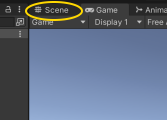
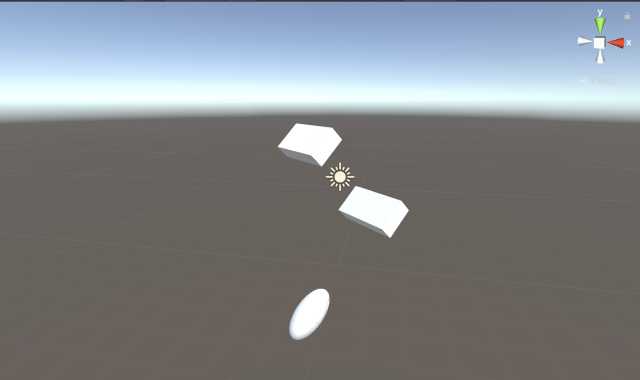
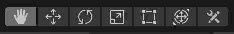
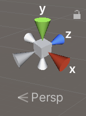
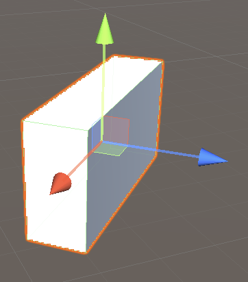

ゲームビューの上にある「Scene」タブ(図1)をクリックすると「シーン(Scene)ビュー」が表示されます(図2)。
図1. Scene タブ(黄色の円で囲んでいるタブ)
図2. シーンビュー

今まで使っていたゲームビューはユーザーがプレイ中に見る画面です。
一方シーンビューはクリエイターがゲームを作成する際に各ゲームオブジェクトの位置関係や大きさを確認したり調整するために利用する画面です。
さてシーンビューは Unity エディタの左上にある「操作ツール」を使って操作します(図3)。
図3. 操作ツール
操作ツールのアイコンは左から
となります。
今回はこの中でよく使われる「ビューツール」、「移動ツール」、「回転ツール」、「拡大縮小ツール」について説明します。
操作ツールの中から「ビューツール」をクリックしてからシーンビュー内をドラッグすると視点が並行移動します。
またはマウスの真ん中ボタンを使ってドラッグしても平行移動します。
では平行移動の操作を試して下さい。
マウスの右ボタンを使ってシーンビュー内をドラッグすると視点が回転します。
またはキーボードの Alt キー、Mac なら Option キーを押しながらドラッグしても回転します。
では回転の操作を試して下さい。
マウスのホイールを回すと画面がズームイン・アウトします。
またはキーボードの Alt キー、Mac なら Option キーを押しながら右ボタンを使ってドラッグしてもズームイン・アウトします。
ではズームイン・アウトの操作を試して下さい。
画面を回転させるとx、y、z軸の方向も変わるので、自分がどこを見てるのか分からなくなります。
この時はシーンビューの右上にある「シーンギズモ(Gizmo)」(図4)を見て下さい。
シーンギズモには x, y, z の文字と色付きの円錐が 3 組表示されています。
それらは現在の x、y、z 軸の方向を示しています。
図4. シーンギズモ

シーンギズモの円錐部分をクリックして視点を回転させることも可能です。
例えば x と書いてある円錐をクリックすると x 軸が手前に向くように視点が回転します。
また中央の四角、または下の「Persp」など書いてある文字を押すたびに透視投影(Perspective)モードと平行投影(Isometric)モードの表示を切り替えることができます。
平行投影モードに切り替えると奥行きがない平面的な画面に変わるので、ゲームオブジェクトの大きさや位置関係の確認がしやすくなります。
なお方向が良く分からなくなったばあいはシフトキーを押しながら中央の四角をクリックして下さい。
すると透視投影モード＋斜め上から見た視点になります。
さらに視点の回転をさせたくない場合は右上の鍵アイコンをクリックして下さい。
すると視点の回転がロックされて回転しなくなります。
ではシーンギズモの操作を試して下さい。
ヒエラルキーでゲームオブジェクトの名前をクリックするとそのゲームオブジェクトが選択されます。
それに加えてシーンビューでは操作ツールの移動ツールをクリックしてから画面内にあるゲームオブジェクトをクリックしてもそのゲームオブジェクトが選択されます。
またヒエラルキーでゲームオブジェクトの名前をダブルクリックするとそのゲームオブジェクトが拡大表示されます。
ではゲームオブジェクトの選択と拡大表示を試して下さい。
ゲームオブジェクトを選択し、さらに操作ツールの移動ツールをクリックするとゲームオブジェクトに矢印が 3 本表示されて移動モードになります(図5)。
矢印の根本にある四角をドラッグすると任意の方向に移動できます。
また各矢印をドラッグするとゲームオブジェクトを平行移動出来ます。
図5. ゲームオブジェクトの移動
ではゲームオブジェクトの移動を試して下さい。
図5 の矢印はゲームオブジェクトが向いている方向を示していて、それぞれ
を表します。
この向きはキーボード操作やゲームパッド操作でゲームオブジェクトを動かす時に大事になりますので覚えておいて下さい。
ゲームオブジェクトを選択した状態で操作ツールの中の「回転ツール」をクリックするとゲームオブジェクトに球が表示されます。
この球面をドラッグするとゲームオブジェクトを回転出来ます。
また球面の上には3本の円が表示されていますが、その円をドラッグすると一定方向のみ回転出来ます。
ではゲームオブジェクトの回転を試して下さい。
ゲームオブジェクトを選択した状態で操作ツールの中の「拡大縮小ツール」をクリックするとゲームオブジェクトに図5の様な線が表示されます。
ただし今回は線の先が矢印ではなくて箱になっています。
この箱をドラッグするとゲームオブジェクトを拡大縮小出来ます。
ではゲームオブジェクトの拡大縮小を試して下さい。
ゲームオブジェクトを綺麗に並べたいときはスナップ移動モードが便利です。
ゲームオブジェクトが移動モードになっている状態でキーボードの Control キー、Mac では Command キーを押しながらドラッグすると「グリッドスナップ」モードになり、ゲームオブジェクトをカクカク移動出来るようになります。
またゲームオブジェクトが移動モードになっている状態でキーボードの Shift + Control キー、Mac では Shift + Command キーを押しながら矢印の根本にある四角をドラッグすると「サーフェススナップ」モードになり、他のゲームオブジェクトと表面同士がぴったりくっつきます。
※ この移動方法は癖が強いので慣れが必要です。
またゲームオブジェクトが移動モードになっている状態でキーボードの v 文字キーを押すと「頂点スナップ」モードに代わり、マウスをゲームオブジェクトの任意の頂点まで持っていくと矢印が移動してその頂点が選択されます。
角を選択したら矢印をドラッグして別のゲームオブジェクトの頂点の近くまで持っていくと頂点同士がぴったりくっつきます。
※ この移動方法も癖が強いので慣れが必要です。
なお「サーフェススナップ」と「頂点スナップ」の練習をするときはインスペクタを使って各ゲームオブジェクトのパラメータを以下のように設定すると分かりやすいです。
HAKO :
TAMA :
HAKO2 :
ではスナップ移動モード試して下さい。
シーンビューのタブの隣りにある「Game」タブをクリックしてゲームビューに表示を戻して下さい。
すると色々視点変更したのにゲームビューの視点は以前と変わっていないことが分かります。
シーンビューはあくまでゲームを作成する際に利用する画面であってプレイ中に見る画面ではないので、もしゲームビューの視点を変更したい場合はカメラの位置や向きを変える必要があります。
このカメラはヒエラルキーの中にある「Main Camera」です。
なおカメラもゲームオブジェクトの一つです。
では試しにゲームビューを表示した状態のままでヒエラルキーの「Main Camera」をクリックし、インスペクターに表示されるカメラの Position や Rotation を変えるとどうなるか確認して下さい。
またインスペクターの下にある Field of View のスライダを前後させると画面がズームイン・アウトしますのでこちらも試して下さい。
インスペクタを使って各ゲームオブジェクトのパラメータを以下に戻しておきましょう。
Main Camera :
HAKO :
TAMA :
HAKO2 :